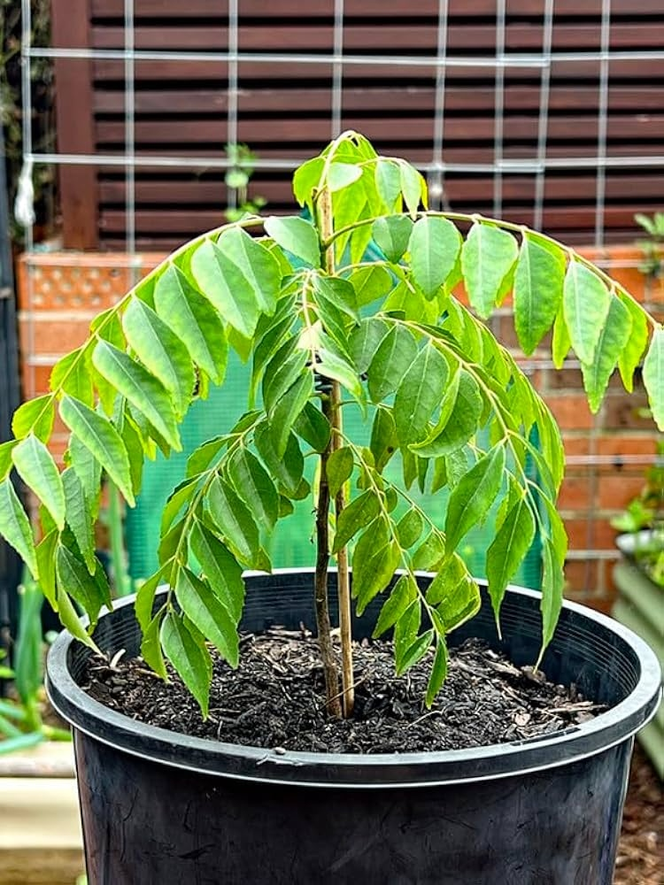

Scientific Name: Murraya koenigii
Common Names: Curry Leaves, Curry Tree
Family: Rutaceae
Native Region: India and Sri Lanka
Plant Type: Small tropical tree/shrub
Uses: Cooking, traditional medicine, herbal remedies
Details: Curry leaves are widely used in Indian cuisine for their unique aroma and flavor. The fresh leaves are commonly added to curries, chutneys, soups, and rice dishes.
The curry leaf plant is a small evergreen tree that grows well in warm climates. Its leaves are rich in nutrients such as iron, calcium, and vitamins A, B, C, and E.
In traditional Ayurvedic medicine, curry leaves are used to support digestion, improve hair health, and help manage blood sugar levels.
The plant is easy to grow in home gardens and pots, making it a common household herb in many Indian homes. Fresh curry leaves are preferred over dried ones because of their stronger flavor and fragrance.